Welcome
Welcome to the Henna Design course. Select a module to begin.
Module 1: Introduction of Henna
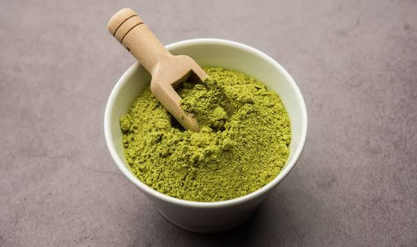
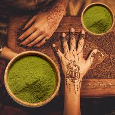
Overview
Henna, also known as Mehndi, is an ancient form of body art that has been practiced for thousands of years across Africa, the Middle East, and South Asia. Made from the powdered leaves of the Lawsonia inermis plant, henna is a natural dye used to create beautiful, meaningful designs on the skin for celebrations, rituals, and personal expression.
Henna art combines tradition, creativity, and cultural storytelling. Every pattern, whether floral, geometric, or symbolic, carries history, meaning, and beauty.Today, henna is loved globally for its elegance, versatility, and connection to heritage.
This course will guide you through the essentials of henna, from understanding its cultural roots to learning how to create your own designs with confidence. Whether you are a beginner or simply curious, this is the perfect place to start your journey into the art of henna.
Learning Objectives
- Understand the traditional concepts of henna
- Become familiar with types of henna
- Learn how the course is structured
- Identify the skills you will develop
Quiz 1
1. Henna has traditionally been used for body art and cultural ceremonies.
2. Which plant is used to make natural henna?
3. The main goal of Module 1 is to introduce you to the basic concepts and structure of the course.
4. Which of the following is NOT a reason why henna is culturally important?
Module 2: Tools & Materials
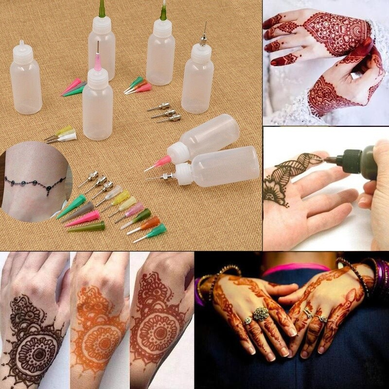
Introduction
Working with henna is an art that blends creativity, culture, and technique. To create clean lines, beautiful designs, and long-lasting stains, it is essential to start with the right tools and materials. In this module, you will explore everything you need to begin your henna journey from the natural ingredients used to create quality paste, to the applicators and accessories that help bring your designs to life.
You will learn how to select safe, skin-friendly products, understand the purpose of each tool, and build your own beginner or professional henna kit. Having the proper materials not only makes the process easier but also greatly improves the final results of your work. By the end of this module, you will know exactly what to use, why it is important, and how each item contributes to creating beautiful henna art.
Materials for Henna
The quality of your henna design begins with the materials you choose. Natural henna powder is the foundation preferably finely sifted and fresh, with a rich green color that signals good dye content. To create a smooth and effective paste, you will need a liquid such as lemon juice, tea, or water, along with a natural sugar source to improve consistency and adhesion. Essential oils like lavender or eucalyptus are also commonly added to enhance stain quality and fragrance. Additional materials such as applicator cones, plastic wrap, gloves, and mixing bowls help you prepare and apply your paste cleanly and efficiently. Using the right materials ensures not only beautiful results but also safety and comfort for both the artist and the client.
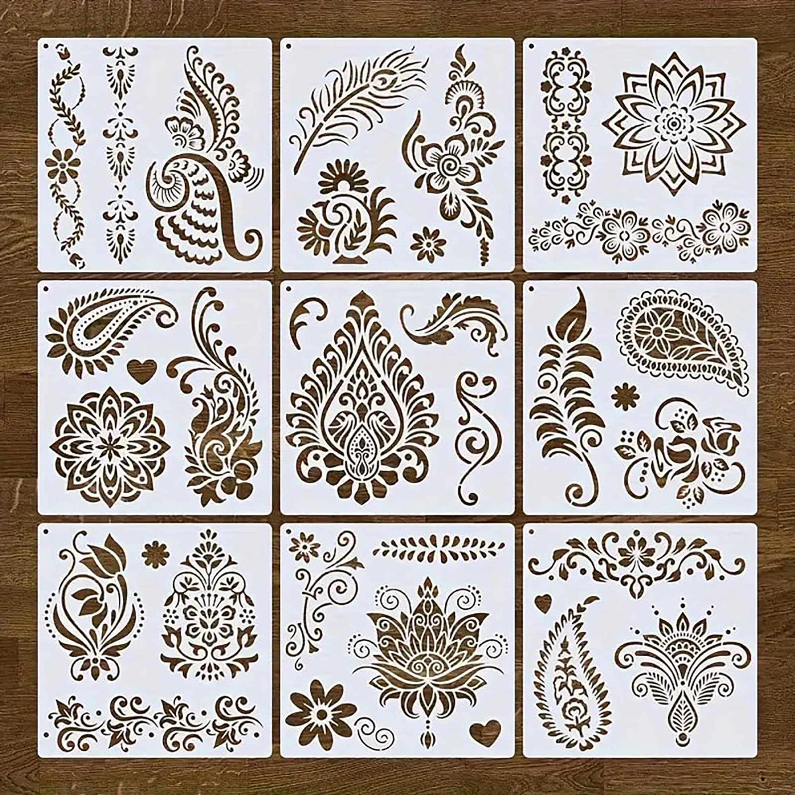

Tools for Henna
Henna artistry relies on a small but essential set of tools that allow you to create clean, precise, and beautiful designs. The most important tool is the applicator, usually a henna cone, bottle, or syringe, each offering different levels of control and comfort for the artist. Fine-tip nozzles and cone tips help you achieve thin, detailed lines, while larger openings are useful for filling shapes or creating bold patterns. You may also use tools like spatulas and spoons for mixing paste, strainers for removing lumps, and scissors for adjusting cone tips. Other helpful items include tissues for correcting mistakes, cotton swabs for cleaning lines, and sealant sprays to protect the design as it dries. With the right tools, your creativity can flow more easily, and your designs will look more polished and professional.
How to mix you henna

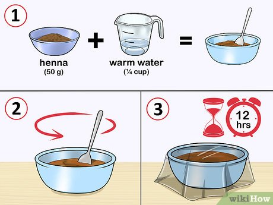
To prepare henna paste, start by sifting high-quality henna powder to remove any clumps. In a non-metallic bowl, combine the sifted powder with a liquid such as lemon juice or tea to form a thick, yogurt-like consistency. Add sugar to the mixture to improve adhesion and enhance the stain. Optionally, include a few drops of essential oils like eucalyptus or lavender for better color development and fragrance. Mix thoroughly until smooth, then cover the bowl with plastic wrap and let it sit at room temperature for 12-24 hours to allow the dye to release. After resting, stir the paste again and adjust the consistency with additional liquid if necessary. Your henna paste is now ready to be filled into applicator cones or bottles for use.
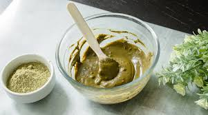
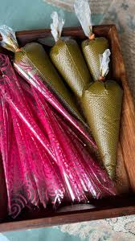
Conclusion
By understanding the essential tools and materials used in henna artistry, you have taken an important step toward building a strong foundation for your practice. The items you choose whether natural ingredients for your paste or the tools that help you apply it directly influence the quality, safety, and beauty of your designs. With this knowledge, you are now ready to prepare your own henna kit and work with confidence. In the next modules, you will begin creating the intricate patterns that make henna such a unique and cherished art form
Quiz 2
1. The main ingredient in henna paste is henna powder.
2. Which of these liquids can be used to make henna paste?
3. Essential oils in henna paste help to:
4. Gloves, cones, and applicators are examples of henna tools.
Module 3: Basic Patterns of Henna
Henna art is a traditional form of body decoration that uses natural dye to create intricate and beautiful designs. The patterns range from simple geometric shapes to elaborate floral and cultural motifs. Understanding the basic patterns is essential for beginners and enthusiasts alike, as these form the foundation of more complex henna designs.
1. Floral Patterns
Floral patterns often include flowers, petals, and vines arranged in aesthetically pleasing arrangements. These designs symbolize beauty, growth, and joy, and are frequently used in bridal and festive henna.
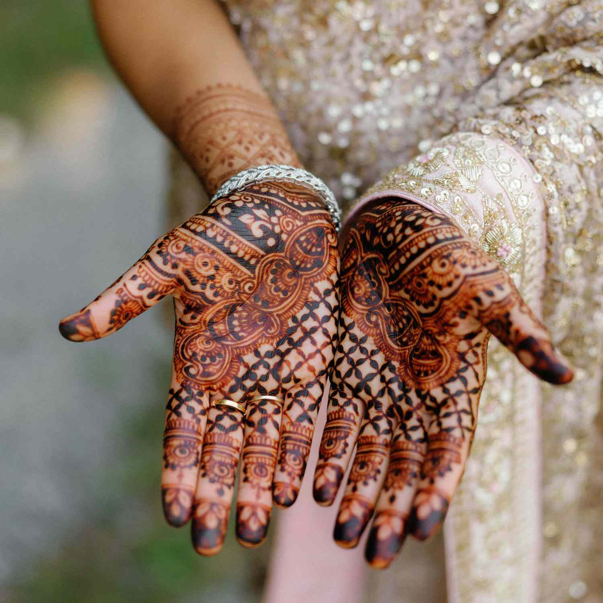
2. Geometric Patterns
Geometric patterns consist of lines, shapes, and symmetry. They can include triangles, squares, circles, and grids. They are easy to replicate and provide a modern, elegant look. Geometric designs form the base of more elaborate motifs.
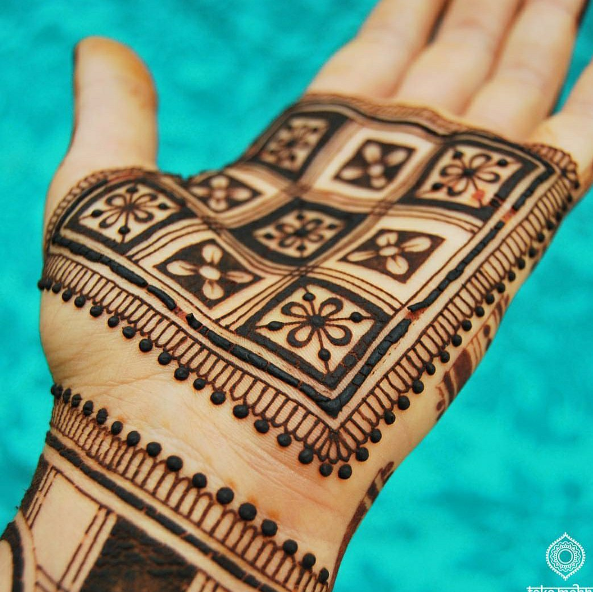
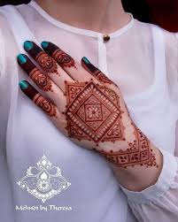
4. Mandala Patterns
Mandala patterns are circular designs representing unity and balance, created using concentric shapes and detailed patterns radiating from the center.

5. Simple Lines and Dots
For beginners, simple lines, dots, and swirls are foundational patterns. They are easy to practice and can be combined to create more complex designs, improving control and precision with the henna applicator.
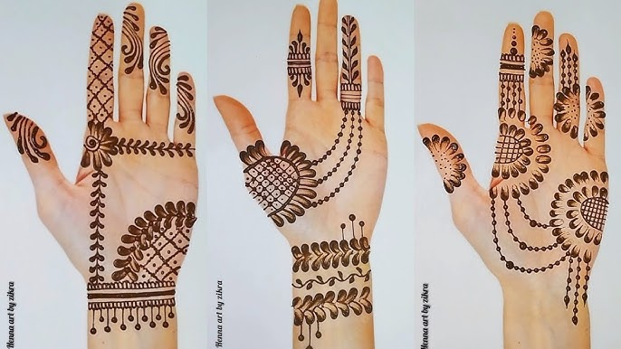
Conclusion
Understanding basic patterns is crucial for creating beautiful and meaningful designs. Mastering these allows artists to create intricate, culturally rich, and aesthetically pleasing designs for celebrations, ceremonies, or personal expression.
Module 3 Quiz
1. Paisley patterns are teardrop-shaped and symbolic of fertility and luck.
2. Mandala patterns are circular designs representing:
3. Simple lines and dots are foundational patterns for beginners.
4. Geometric patterns include shapes like: